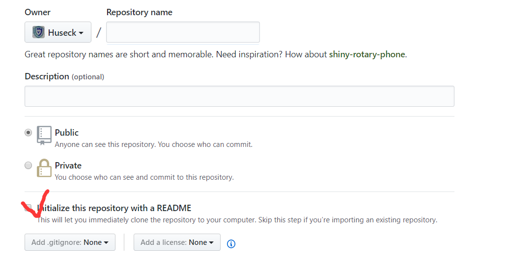

管理github
使用git配合管理github仓库
首先在github上创建仓库

然后就是你需要设置自己git的ssh-keys进行对自己github仓库的管理
具体设置参考key-add
之后就是本地创建一个git1
2
3
4
5
6
7
8
9
10
11
12#先创建一个文件夹和远程仓库项目的名称一样然后
$ git init
$ git remote add master https://github.com/Huseck/scan_kill_php_shell.git 指定远程仓库+
$ git remote -v //显示一下信息
$ git pull --rebase master master 获取一下readme.md 的信息
$ git add . //添加本地文件
$ git commit -m "first push" //保存一下信息
$ git push -u master master // 上传
//之后的每次文件的改变之后使用
$ git add .
$ git commit -m "修改的信息"
$ git push
建议以后的推送使用commit 填写修改的信息比较好回滚
其他经常使用到的功能
git工具下载：https://git-scm.com/download/
配置git信息
1 | git config --global user.name "Your name" |
1、git本地仓库初始化
1 | git init |
2、提交远程到仓库
1 | git add . |
3、分支管理
1 | git branch Liang //创建Liang的分支 |
4、合并主分区
1 | git checkout master (主分支) |
5、回滚
主分支1
2
3
4
5
6
7
8
9
10
11
12$git status //查看仓库状态
$git diff //查看本地和远程仓库的不同
$git log 查看commit的sha1值+ --pretty=oneline参数简练显示
$git log -p -2 //比对一下内容
//进行回滚到上一个版本时，此时的版本就会被删除，本地的文件内容就回滚到上一个版本时的内容，之后push到仓库
$git reset --hard b353d4653da422aa6be61696c5c6379bffd7bfc5
$git push -f -u master master //本地和远程仓库的文件内容都回到了上一个版本
//如果此时你后悔了，还想回到最新的版本中
$git reflog //61e013c HEAD@{7}: commit: 增加相似md5值，匹配内容
$git reset --hard 61e013c
$git push -f -u master master
//同想能达到后悔的目的

Powered by HyperComments